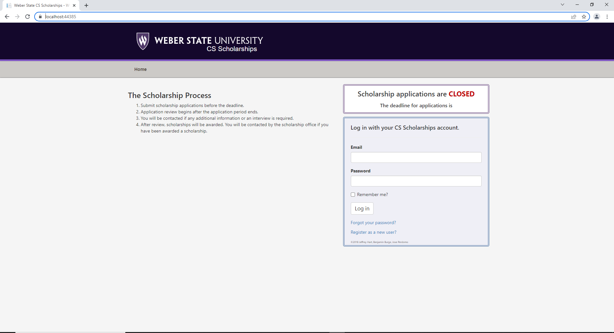
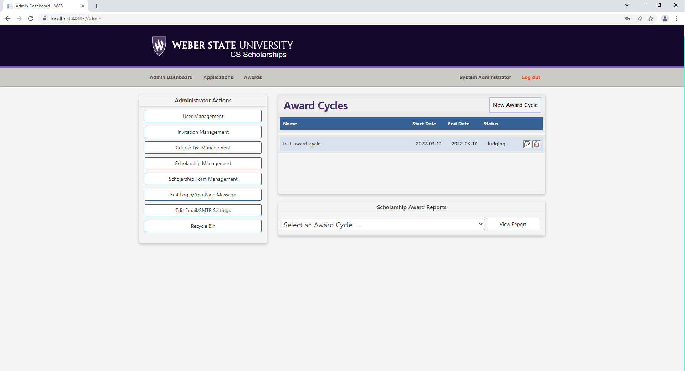
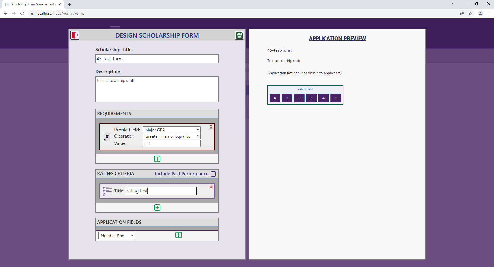

Scholarship App
Github RepositoryThis project was a group one with members Tage Higley, Dennis Chase, Hunter Olson, and Cecilia Harvey. For the project we were tasked to update a legacy application to a more recent version of ASP.NET Core. We updated it from 2.0 to 6.0. We also had to fix a few bugs including the Entity Framewore database not auto generating, missing field in the student profile, and problems happening when a Judge hasn't rated an application.
I helped updating from version 2.0 to 2.1. The processes wasn't difficult, we just followed the Microsoft docs. I also made it so the database auto generated by migrating the database in Startup.cs. Here is that code.
using (var serviceScope = app.ApplicationServices.GetService().CreateScope()) { var cont = serviceScope.ServiceProvider.GetRequiredService (); cont.Database.Migrate(); }
The most difficult part of this project was understanding how the code was suppose to work. This was my first time working with a "large" project someone else did. After awhile looking through the code with some help from my teammates I was able to figure out how most of the project worked.
The tool we used for this project includes ASP.NET Core 6.0, SQL, Entity Framework, and Visual Studio
  